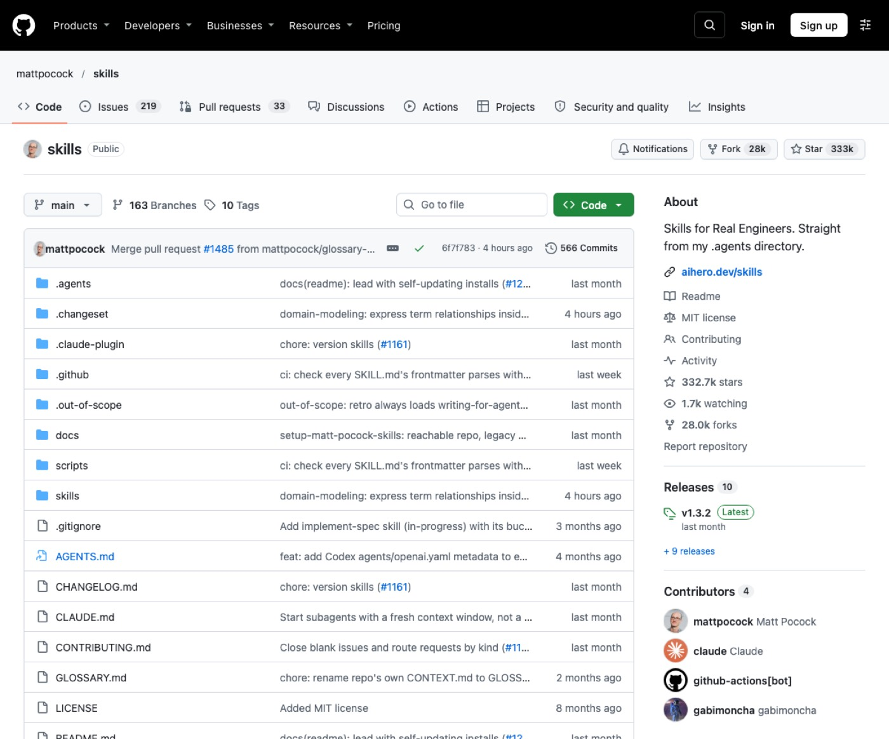

설치
클로드 코드(터미널에서 한 줄)
claude plugin install mattpocock-skills@claude-plugins-official
다른 에이전트·파일로 받기
npx skills@latest add mattpocock/skills
설치 뒤
새 세션을 열고, 저장소마다 한 번 /setup-matt-pocock-skills (개발용 스킬만 필요)
쓰는 법
- /grill-me 뒤에 만들고 싶은 걸 한 줄로 써요. 예: /grill-me 동네 빵집 예약 페이지 만들고 싶어
- 클로드가 번호 붙인 질문과 추천 답을 한 번에 보여 줘요. 맞으면 '예', 아니면 그 번호만 고쳐 답해요.
- 질문이 더 안 나오면 '이대로 만들어 줘'라고 해요. 대화가 길어졌으면 /handoff로 문서를 만들어 새 창에서 이어요.
바로 쓰는 요청문
/grill-me 동네 빵집 케이크 픽업 예약 페이지 만들고 싶어
/grill-me 이번 달 유튜브 쇼츠 계획 짜고 싶어
/handoff 다음 창에서는 결제 화면만 만들 거야
/research 토스페이먼츠 결제 위젯 붙이는 공식 방법
빵집 예시 질문 전체(예시 대화)와 자주 쓰는 스킬 한글 설명
- 빵집 1라운드 Q1 — 누가 쓰나요? → 추천: 동네 단골 손님
- 빵집 1라운드 Q2 — 뭘 예약하나요? → 추천: 케이크 픽업
- 빵집 1라운드 Q3 — 어디에 올리나요? → 추천: 인스타 프로필 링크
- 빵집 2라운드 Q4 — 예약은 몇 분 단위로 받을까요? → 추천: 30분
- 빵집 2라운드 Q5 — 돈은 미리 받을까요? → 추천: 현장 결제
- 빵집 2라운드 Q6 — 마감 뒤 들어온 주문은? → 추천: 다음 날로 넘기기
- 빵집 3라운드 Q7 — 예약 확인은 어떻게 알릴까요? → 추천: 문자 한 통
- 빵집 3라운드 Q8 — 하루 최대 몇 건 받을까요? → 추천: 시간당 4건
- /grill-me — 계획을 끝까지 캐묻는 인터뷰. 정할 것을 갈래로 나눠, 지금 물을 수 있는 질문만 한 번에 번호 붙여 묻고, 질문마다 추천 답을 달아요. '예'라고 하면 추천 답으로 정해져요. 사실 확인은 클로드가 직접 찾고, 결정만 나에게 물어요.
- /grill-with-docs — 그릴 미와 같은데, 묻는 동안 결정 기록(ADR)과 용어집 문서도 같이 만들어요. 코드 작업용.
- /handoff — 지금까지 대화를 다른 에이전트가 이어받을 문서 한 장으로 줄여요. 이미 다른 파일에 있는 내용은 경로만 적고, 비밀번호·API 키·개인정보는 가려요. 문서는 작업 폴더가 아닌 임시 폴더에 저장돼요.
- /research — 질문 하나를 공식 문서·소스 코드 같은 1차 자료로만 조사해, 주장마다 출처를 단 마크다운 파일로 저장해요. 뒤에서 따로 도는 에이전트가 읽어서 나는 하던 일을 계속해요.
- /teach — 지금 작업 폴더 안에서 새 개념·기술을 가르쳐 줘요.
- /to-questionnaire — 혼자 답할 수 없는 결정을 다른 사람이 채울 질문지로 바꿔요.
- /diagnosing-bugs — 안 되는 것·느린 것을 진단하는 순서대로 원인을 좁혀요.
- /tdd — 테스트를 먼저 쓰고 기능을 만드는 방식으로 진행해요.
빵집 질문은 이해를 돕는 예시예요. 실제 질문은 내가 쓴 요청에 따라 달라져요. 개발용 스킬(/tdd·/to-spec 등)은 저장소마다 /setup-matt-pocock-skills를 한 번 돌려야 제대로 써요.